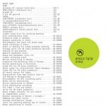

Music Reviews
-

Bent Knee Shiny Eyed Babies
An album pregnant with themes of loss, guilt, and fear of an uninhabitable future, this Boston-based band hasn't a cure but rather a dynamically new and accessible art rock sound for what's ailing them.
Grant Phipps nurtures... -
))_Soused.jpg)
Scott Walker + Sunn O))) Soused
Soused is the new collaborative release from drone metal champions, Sunn O))), and elder pop icon-turned-avant madman, Scott Walker.
Sean Caldwell reviews... -
The Twilight Sad Nobody Wants to Be Here and Nobody Wants to Leave
The Scottish band's assured return comes after a period of uncertainty, one that makes an effort to remedy their cloistered demeanor.
Juan Edgardo Rodríguez reviews... -
Zola Jesus Taiga
On Taiga, Zola Jesus sounds more focused and hungrier than ever before. The result is her most accessible, and best, album yet.
Zola Jesus in widescreen... -

Aphex Twin Syro
Syro will come to be remembered as another classic from one of electronic music's most brilliant minds - the sort of record so brimming with ideas that it demands obsessive listening.
Stephen Wragg reviews... -
Vashti Bunyan Heartleap
The strongly venerated cult Scottish singer/songwriter releases her third album in the span of forty four years, one that means to give closure to her unconventional career path.
Juan Edgardo Rodríguez reviews... -

Purling Hiss Weirdon
Weirdon, the seventh album from Purling Hiss, is poppy enough for broader appeal and loud enough to sate the Drag City allegiant. Enjoy. I did.
Sean Caldwell reviews... -

Perfume Genius Too Bright
With Too Bright, singer/songwriter Michael Hadreas unleashes the beast within him thanks to some glam and industrial sonic touches, all while maintaining the sensitive elegance his music is known for.
Peter Quinton reviews... -
SBTRKT Wonder Where We Land
After an explosive debut, eclectic electronic producer Aaron Jerome returns for his sophomore release as SBTRKT. The cover art is a sure-fire 10, but for music lovers, it's what's on the inside that truly counts.
Ben Jones wants a palm-sized masked panther... -

Various Artists Northern Soul: The Soundtrack
Few fanbases are as obsessive about their music than Northern Soul devotees. As a new film based around the genre hits the cinemas, Joe Rivers reviews the soundtrack to a time that was unprecedented in British history.
Head on down to the Wigan Casino all-nighter...